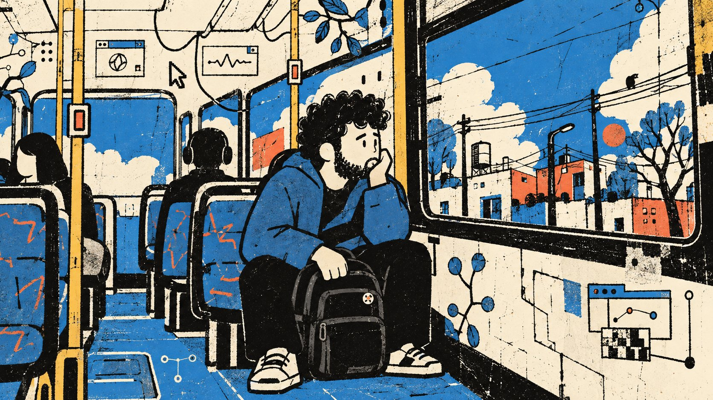

Suéter 7 presenta
TU VERSIÓN
DEL OTRO LADO
Experimento 01
Paso 1
Subí una foto
Arrastrá una foto o hacé clic acá
Una sola persona, con el rostro visible. JPG, PNG o WEBP hasta 10 MB.
Paso 2
Elegí dónde aparecés
Paso 3
Elegí los colores
Seleccioná al menos dos. La imagen usará solamente esta paleta.
Paso 4
Prepará la transformación
Tu versión está lista. Compartila y hacé crecer la red.

Tu imagen va a aparecer acá
La foto se transforma en un personaje 2D: reconocible, pero no realista.
Leyendo tu silueta…
La generación puede tardar un rato. No cierres esta pestaña.
Modo demo: podés probar todo el recorrido y ver el resultado visual de referencia.